UX Research + Design
Dec 2020 (4 weeks)
Michael Lyken, Euphie Zhao, Nguyen Nguyen, Jessica Lou
This project focuses on evaluating and redesigning the app - Canvas Student. By conducting user research and competitive analysis, we identified some usability problems, and decided to redesign the inbox page. Through a series of sketching, prototyping, and user testing, we redesigned the inbox page of Canvas Student that effectively increases the efficiency and flexibility of use.
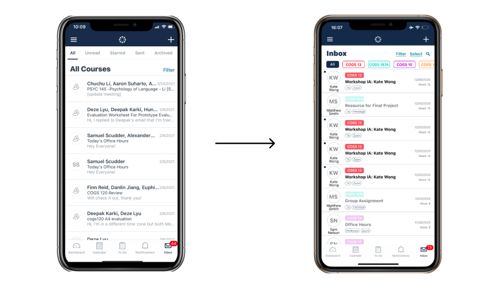Canvas student app is one of the most popular learning management systems and we use it almost every day to access course materials, check announcements, check grades and so on. We are interested in this app because during the current pandemic, the usage of online learning platforms has increased and using Canvas app (and other similar platforms) becomes an important part of our lives. By doing user testing and redesigning the Canvas Student app, hopefully we can make it more effective in facilitating remote learning.
For this project, we performed user testing with four users, who are all university students. We consider them to be valid users because most university students are required to use these online platforms such as Canvas, and especially during the pandemic, university students use it very frequently. However with selecting university students, there can be an inherent bias. For example, if one is still used to the previous platform (Blackboard), they may not be all that familiar with Canvas and may be limited in their knowledge of the platform. Also, users may be extremely comfortable with the platform, so there is a chance that we will have extreme outliers in our data.
Before asking users to perform tasks, we did a short interview with each user, asking questions about their age, school, majors, and their previous experience using Canvas or other online learning platforms.
A full list of interview questions can be viewed here
In the testing section, we prepared 6 tasks for user to do.
A: Have you received any feedback from TA or instructor in this quarter? If so, fins the feedback from your instructor/TA for your most recently graded assignment.
B: Have you ever had group assignments? Please explain and show how your group submits them.
C: If you get a notification that you just received a message from your TA, find that message
D:Find a message sent last week from one of your TAs regarding an assignment due this week.
E: How to send a message to your classmate/group member.
F: Find what you need to do on/before Dec. 11th.
Due to the current pandemic, we were only able to do zoom meetings with the users, with one member leading the section while others observe and take notes. After receiving consent, we asked the user to share the screen with us using her/his phone and open Canvas on his/her phone. The meetings were recorded and reviewed after the testing session.
Among the four users, only one user had problems with finding the feedback of an assignment. For the other three users, it is pretty easy for them to view feedback, mainly because they have been using the Canvas Student app for a while. In fact, the feedback is located under the “submission & rubric”, which can certainly confuse the users, causing them to ignore the tab and then cannot find any feedback through the mobile app.
When performing the task of submitting group assignments, no users had problems doing it but all of them did it the same way as submitting individual assignments. The “group” section on the homepage did not provide ways to submit group assignments. Also, there are problems if they are not the ones to submit assignments, as it shows the assignment is missing on their ends even though the other members have already submitted it.
Three of the four users encountered problems when performing the task involved using “inbox”. The “filter” in the “inbox” only provides filtering based on courses and is not clearly organized or displayed. Users also had problems looking for a particular message as they can’t recognize the TA’s name and the overview of a message sometimes doesn't show what course it is from. Also, since there are many messages about updates of zoom meetings, and there are no mass select functions. Since students are receiving Canvas messages via Gmail simultaneously, three of the users would prefer to check their email instead of Canvas, thus it often leaves users with many unread messages in Canvas.
A full analysis can be viewed here
After the tests and the analysis of the data that those tests produced, the one componet we would be redesigning is the organization of the inbox page.
Users can only sort by courses and that having one restriction when it comes to sorting is not specific enough for the function to be genuinely effective.
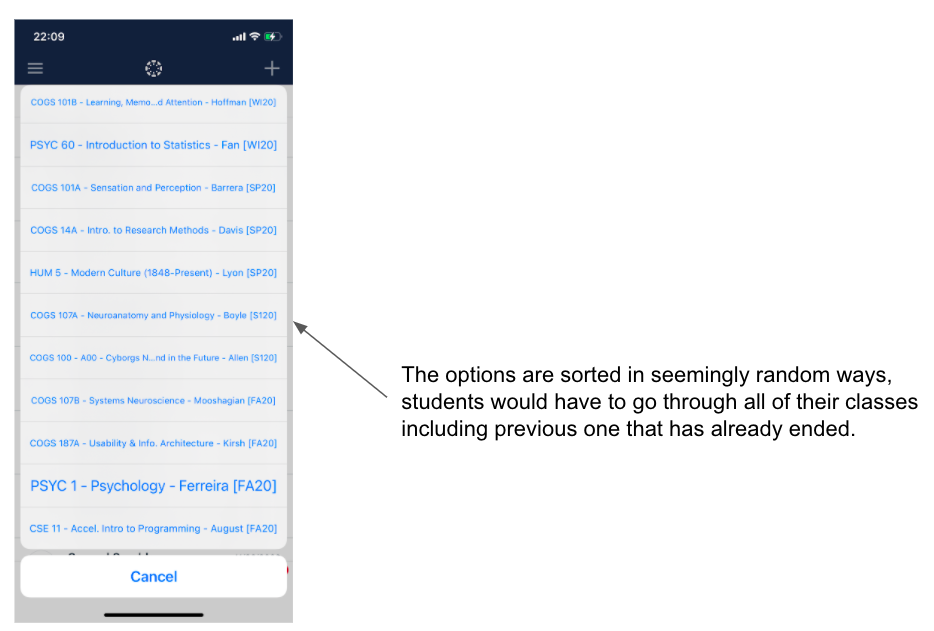This violates the heuristic of aesthetic and minimalist design. The different font sizes have no aesthetics and make users hard to read. Besides, it violates the heuristic of flexibility and efficiency of use because users have to pick their current enrolling courses among all courses that they have already taken, and it slows down the users instead of an accelerator.
In the inbox, it lacks simple visual cues to help users instantly categorize messages in their head. Users had a hard time identifying the TA and didn’t know what course the message was sent from. For examples, simple visual cue such as tags for meetings, tags for sender (TA, Professor, or Other Students), color code for different classes would help student tremendously in figuring if the message belong to the dozens of spams zoom meeting that they get everyday or if its an actually important announcement being made by the professor.
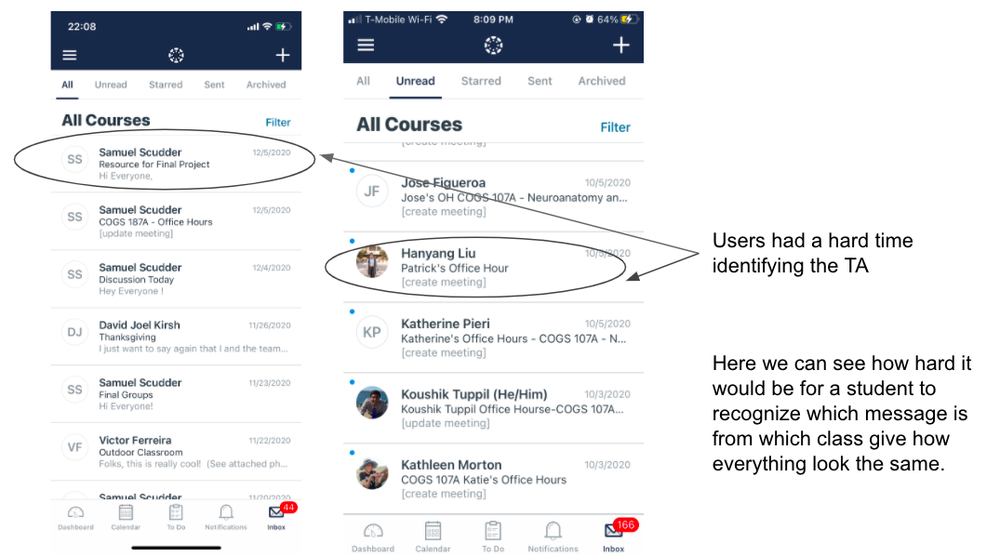This violates the heuristic of recognition rather than recall. Users have to recall their professors and TAs’ names while they are checking messages without any information related to the course.
There is no search bar nor is there a way to mass select messages to sort them up. If you wanted to sort messages you would have to do so one by one. And when you do them one by one, you would have to click onto each individual one first then tap the 3 dots on top then select delete, a lengthy process especially if you have a lot of messages.
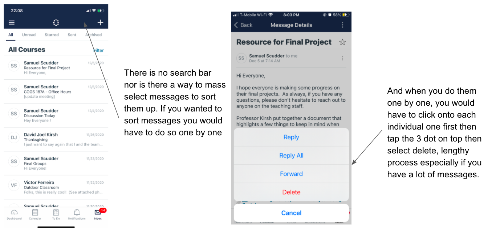This violates the heuristic of flexibility and efficiency of use. Because the process of making changes is too redundant, and users cannot adjust each message on the inbox homepage. They have to access the third-level page to adjust a single message.
After the tests and the analysis of the data that those tests produced, the one componet we would be redesigning is the organization of the inbox page.
Piazza is an excellent example of messaging for school courses. On the homepage, it separates messages into courses with active and inactive dividers. It is a straightforward design for users to check on each course’s messages instead of constructing all messages in one inbox. Within each course, it provides dividers for each week. Although it violates the heuristic of recognition than recall, it is still a good way to organize all the messages with a timeframe. This provides an optional solution for the first problem we identified in Canvas Student app. The separation of courses in advance will give users helpful guidance on what they are looking for. Besides, the timeframe will provide users with organized messages in the inbox.
Blackboard is an app functioning similarly to Canvas Student App. In the activity stream tab, which has a similar function to the inbox, each message is specified with the course information, including the course ID and the course’s name, and color-coded. The color coding and the specification of the course information could solve the second problem we identified in Canvas Student app. This will give the users a more precise guide for what they are looking for. Color coding matching with the course color will enhance the aesthetics and visual cues for the users.
UC San Diego mobile app provides a clear organization of filtering what users want to see on the homepage. This filter gives users flexibility and control of selecting information as well as the visibility of system status. This organization of information could solve the first problem we identified in Canvas Student app. We can put for options in the filter besides the courses enhancing the flexibility and user control.
Before starting on the prototypes, we made four sketches that provides four different solutions solving the problem of Canvas inbox.
In the first one, we designed the inbox in a similar way as the dashboard, except that the groups sections are eliminated. The users could choose to view all the messages or view messages from a specific course. In “All messages”, the user is reminded of the course name. The user could also search through the inbox or filter messages.
In the second sketch, we color coded the courses and added time frames where users can choose to see messages from specific week.
In the third sketch, we added a menu bar on top of the inbox page. The menu bar contains a list of courses and users can choose to see messages from a particular course.
In the fourth sketch, we color coded the courses and added a filter section that allow users to sort and search messages
From the user interview and testing, we learned that people use Canvas Student app mostly for checking information (announcement, messages, grades, etc.). We found that the interactivity and content on the inbox page is badly managed. The messages in the inbox are not organized nor categorized and users had problems finding target messages.
We color coded the messages and added the course name on each one, giving them categorizes, because users sometimes have a hard time identifying the TA. With the course name, users won’t have to click in message details to see what course it is from.
We changed the top navigation bar which previously supports viewing unread, starred, sent messages to one that allows users to switch between different classes and see only messages from one course. From the user testings, we found that users rarely use the function to view only unread, sent, starred messages, but rather will look for messages from a particular class. We changed this top bar so that users will have quicker access to a particular message.
We redesigned the filter to support more sorting functions. As we changed the top navigation bar, we moved those functions into the filter tab and users can still view only sent, starred or unread messages. We also added a function that allows users to select time frames because it narrows down the number of messages and helps users save time finding target messages. We provided a way for users to hide messages on zoom updates. Most unread messages are those about updates of zoom meetings, and there were so many that they take up much space on the inbox page. In the filter, we added a function for users to view only messages and hide those about zoom meetings so that distractions are reduced and users can access target messages faster.
Instead of showing all messages instantly when the user clicks on inbox, we added a step for users to select the course first. We made this change because this way the messages are organized by courses and users can have faster access to messages from a specific course.
We added a timeline on top that allows users to view messages from a certain week only as the quarter is usually divided into weeks, we thought it would be helpful to show what week it is, and categorize the messages by the week it is from.
Similar to the first prototype, we moved the unread, starred and sent tabs into filter because we found that these are not often used by users, and instead we put the timeline on top.
In the filter, we added functions that sort messages based on the senders so that it is easier to locate a message from a certain sender. We also added a search function that if users have a target message they couldn’t find it.
After finishing the prototypes, we performed second round user testing to test our redesigned prototypes.
Testing procedures are similar to that of the first user testing, but in this section, we asked users to do tasks related to using inbox page to test our redesigned component.
A: You just received a notification of a new message, find that message.
B: Your professor sent a message a couple of weeks ago about an exam/assignment/lab that you are currently working on, find that message.
C: Find the most recent message sent by your TA of a specific course.
D:Your TA updates the zoom link for your discussion section, find the new link.
When redesigning the inbox page, we focused on making the contents more organized. We have done so by adding different categorizations that make the interactivity more flexible and efficient. In the second round of user testing, we found that some of the redesigned parts worked well while some did not work as expected.
Categorizing the messages by courses increases the efficiency of use, and helps users when they are looking for a message. The course labels on the top (redesign 1) work well as they help users identify the messages. The timeline (redesign 2) also worked as it provided faster access to old messages. Also, The search function also helped users with finding specific messages and addressing them.
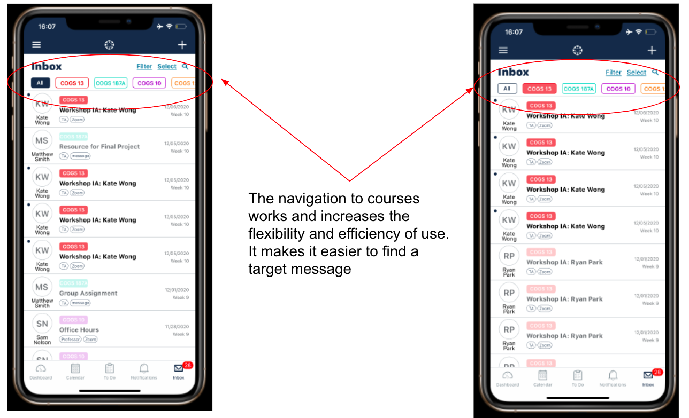 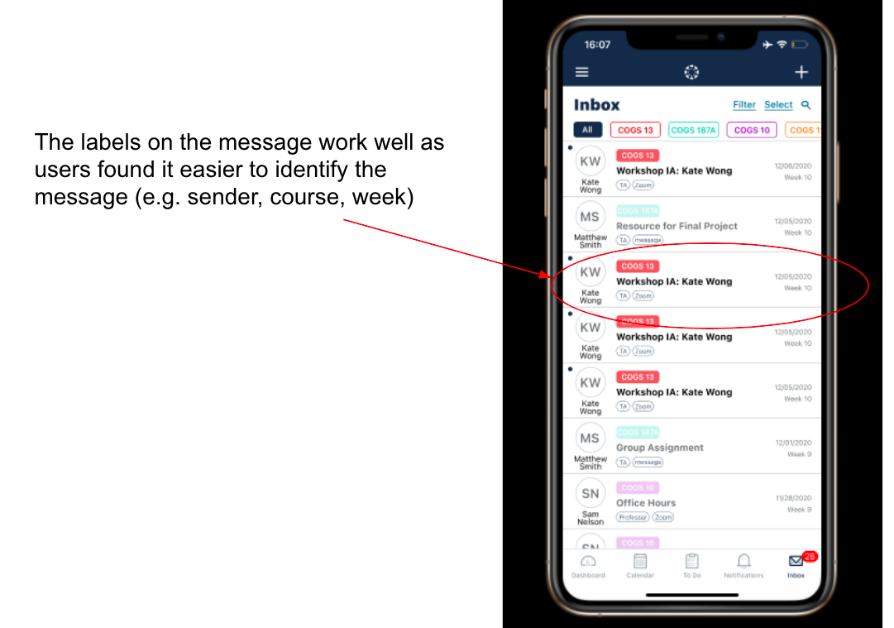 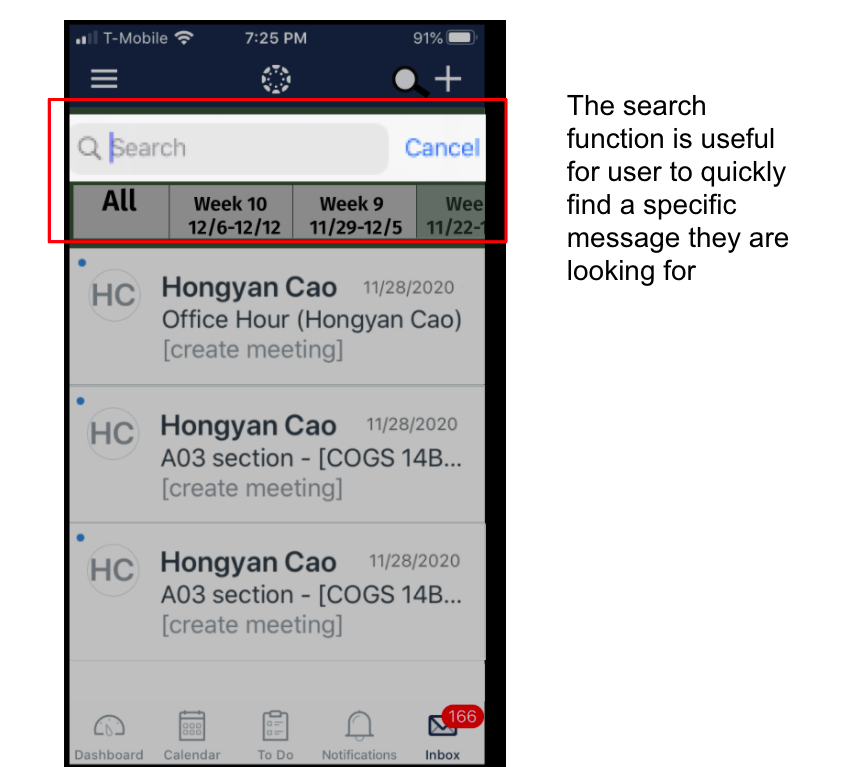 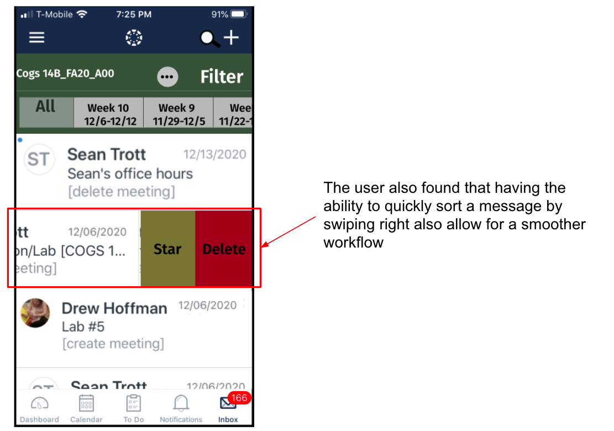The filter did not work as expected. We thought it would be helpful to have categorizations of messages so that users can filter out unwanted messages. However, it did not work as it increased the workflow for some users. Users would want to scroll rather than clicks a couple of times.
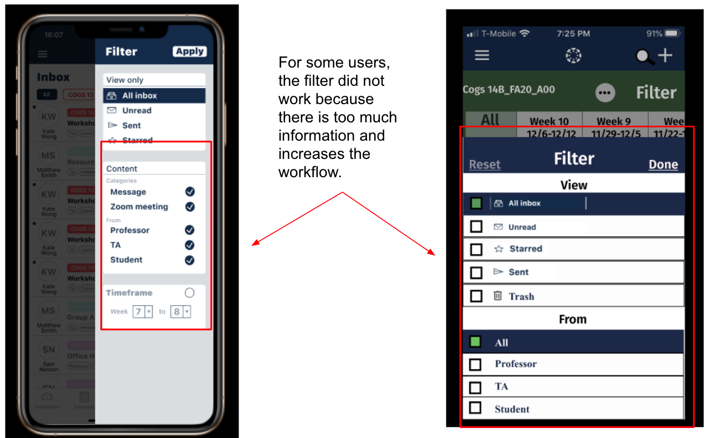 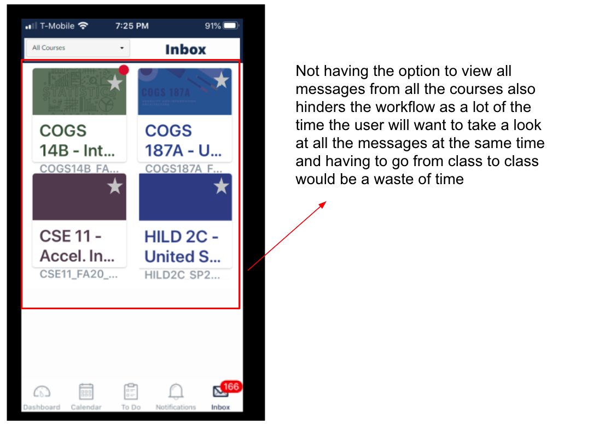 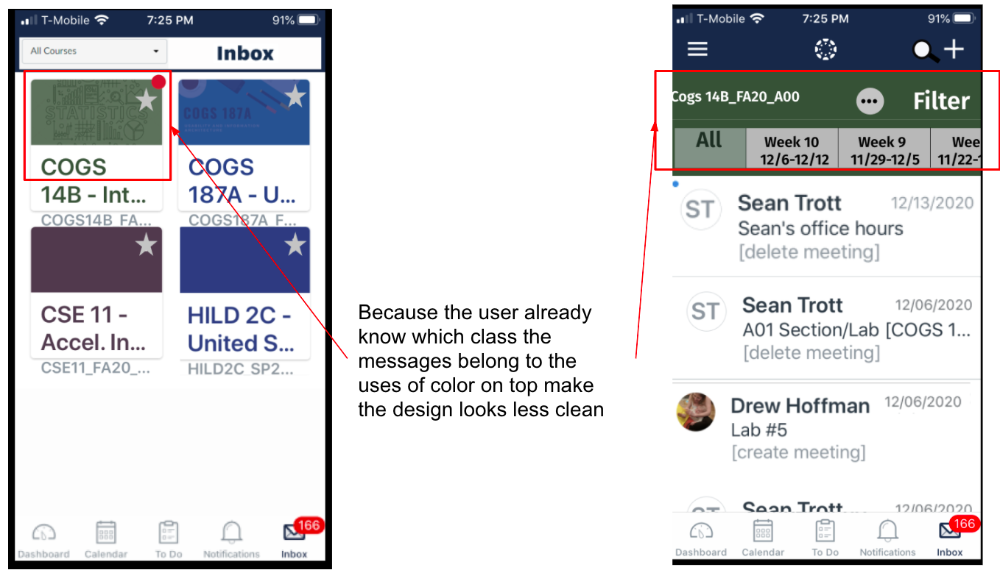From the user test on our redesigns, we figured that some problems we identified might not be a good representation of the problems for the population due to the limited number of users we have. While it can be easier for someone to locate messages using the filter, it’s true that for someone else using the filter increases their workflow. we noticed that in the 2nd user testing, some of our users rarely use inbox although they use the Canvas Student app. These users receive relatively little amount of messages from the professors or TAs at school and they thought the filter is unnecessary. We learned that there is always a tradeoff when making changes. When redesigning a component, we should test it thoroughly with enough users to make sure the tradeoff is worth it.
Besides, we found that it could be difficult to select users to test redesigns since we have to consider people who are users or potential users of the app while at the same time they might already be familiar with the app. It is hard to test the redesigns when we don’t know whether the users’ reactions are due to the lack of effectiveness of our changes or simply because they were too familiar with the old versions.